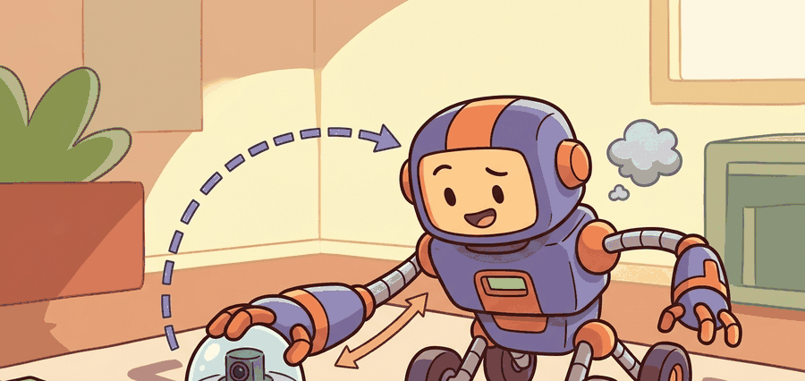

"A tactile camera turns deformation into geometry."

Figure 44.2A: Optical tactile sensors transform deformation into images, then back into contact-state estimates that the controller can use immediately.
A Sensor Bench Engineer
Big Picture
Vision-based tactile sensors convert local surface deformation inside a compliant fingertip into images that can be processed like dense contact maps.
Reader Pathway
Follow the signal path from elastomer deformation to illumination pattern, image formation, feature extraction, and contact-state estimation. The core question is what the tactile image is actually measuring.
What This Section Develops
This section explains how GelSight, DIGIT, and related optical tactile sensors encode contact geometry, pressure patterns, and shear through deformable skins, lighting, and camera observation.
It links tactile hardware design to perception pipelines and to the downstream manipulation policies that consume those local contact images.
Action Is The Test
A vision-based tactile image is not just another camera frame. It is an indirect measurement of deformation, so calibration and reconstruction assumptions matter as much as the neural network that reads the image.
Figure 44.2.1: Optical tactile sensors transform deformation into images, then back into contact-state estimates that the controller can use immediately.
Theory
Optical tactile sensors observe a deformable interface under controlled lighting. Contact changes marker motion, shading, or surface normal fields, which can then be decoded into geometry, force proxies, or slip cues.
The modeling burden shifts from classical force sensing toward calibration, photometric consistency, and deformation reconstruction. That is why tactile-image interpretation benefits from both geometric and learned approaches.
The sensor records a contact image, maps it to deformation features or reconstructed geometry, estimates local force or slip proxies, and then feeds those estimates into a manipulation controller or policy. Calibration drift and skin wear are part of the real system state.
Algorithm: Marker-Shift Slip Cue
Calibrate the tactile camera and lighting under no-contact and known-contact conditions.
Extract contact patch, marker motion, or reconstructed depth from each tactile frame.
Map tactile image features to control-relevant quantities such as slip, shear, or local geometry.
Monitor drift from sensor wear or lighting change and refresh calibration when needed.
Code Fragment 44.2.1 captures the basic logic behind many optical tactile pipelines: local image motion can become a slip-relevant control signal.
Expected output: The expected trace flags a slip-like event because average marker motion is large. In a real system, that cue would be combined with normal-force context and controller state before acting.
Library Shortcut
DIGIT and GelSight ecosystems supply hardware references, while tactile-processing libraries and simulator tools help with fast prototyping. The winning workflow still depends on clean calibration and task-specific control targets.
Practical Recipe
Start with no-contact, static-contact, and sliding-contact calibration captures.
Choose the contact quantity you actually need: geometry, shear, force proxy, or slip cue.
Keep raw tactile frames and derived features together in the dataset.
Track sensor wear because elastomer aging changes the signal distribution over time.
Validate tactile-image interpretations on real tasks, not only on offline reconstruction metrics.
Common Failure Mode
A visually beautiful tactile image can still be useless if the calibration does not tie it to a control-relevant quantity. Pretty contact images are not the same thing as actionable touch.
Practical Example
Optical tactile sensors are especially strong for local shape discrimination, slip onset, and fine alignment tasks such as connector insertion or textured-surface following.
Memory Hook
Tactile cameras are among the few sensors where a blurry blob can be exactly what you wanted, provided you know which contact patch and shear field it represents.
Research Frontier
Recent work expands from flat optical fingertips to richer geometries, higher taxel density, and on-device tactile inference. The systems challenge remains calibration stability and fast control integration.
Self Check
Could you explain what physical quantity your tactile model is estimating from the image, and which calibration assumption makes that estimate possible?
Builder's Deep Dive
This section is a natural point to teach sensor models. Students often jump straight into neural decoding, but optical tactile sensing is most legible when the image formation and deformation path are named explicitly first.
It also clarifies why visuo-tactile learning is not a free fusion win. If the tactile image is poorly calibrated or heavily drifting, the combined model may learn the wrong alignment altogether.
Practical Tool Choices For This Section
Tool or Library
Role in the Topic
Builder Advice
DIGIT
Compact optical tactile hardware
Good for portable, affordable, image-based touch sensing.
GelSight family
High-fidelity contact geometry
Strong when local shape and texture detail matter.
PyTouch
Feature extraction and learning
Use it to prototype tactile-image pipelines quickly.
Mini Lab
Collect a small tactile dataset with no-contact, stable-contact, and slip phases. Show how one visual feature changes across the three modes.
Failure Analysis Pattern
If predictions drift, inspect calibration, elastomer wear, and illumination before blaming the learning model. Optical tactile pipelines fail physically before they fail statistically.
Open ML library for tactile touch sensing and feature learning.
Key Takeaway
Vision-based tactile sensors are powerful because they transform deformation into dense contact images, but that power depends on careful calibration and task-linked interpretation.
Exercise 44.2.1
Choose one optical tactile feature, such as marker shift or reconstructed height, and explain how it would enter a manipulation controller.